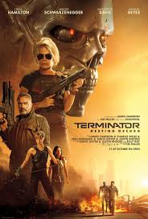
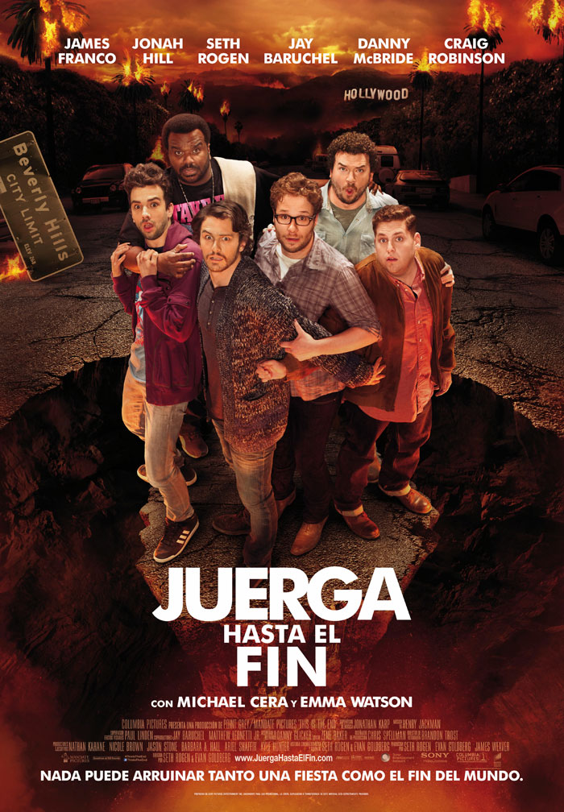

calendario
CINE LA MIRADA
ENERO : NACE UNA ESTRELLA
Jackson, una estrella de la música country con problemas de alcoholismo, descubre el talento de Ally, una joven cantante de la cual se enamora. Mientras la carrera de ella despega, Jackson percibe que sus días de gloria están llegando a su fin
FEBRERO : TITANIC
Jack (DiCaprio), un joven artista, en una partida de cartas gana un pasaje para América, en el Titanic, el trasatlántico más grande y seguro jamás construido. A bordo, conoce a Rose (Kate Winslet), una joven de una buena familia venida a menos que va a contraer un matrimonio de conveniencia con Cal (Billy Zane), un millonario engreído a quien sólo interesa el prestigioso apellido de su prometida. Jack y Rose se enamoran, pero Cal y la madre de Rose ponen todo tipo de trabas a su relación. Inesperadamente, un inmenso iceberg pone en peligro la vida de los pasajeros.
MARZO : TERMINATOR

En 1998, un año después de que Sarah y su hijo John Connor destruyeran la inteligencia artificial Skynet que habría de traer consigo la rebelión de las máquinas, tiene lugar un suceso indicador de que en el futuro sigue habiendo envíos de cyborgs exterminadores al tiempo presente.
En 2020 llegan del futuro una guerrera humana mejorada, Grace (Mackenzie Davis), y un nuevo modelo de Terminator, el Rev-9 (Gabriel Luna), quienes tienen como objetivo a Dani Ramos (Natalia Reyes), la primera para protegerla y el segundo para asesinarla. En ese contexto, Sarah irrumpe sabiendo que un exterminador llegaría y ayudará a las mujeres a huir mientras se dilucidan las respuestas en torno a lo que está ocurriendo en el futuro.
ABRIL : LOS MERCENARIOS 3
Barney, Christmas y el resto del equipo deben enfrentarse a Conrad Stonebanks, cofundador del grupo que se convirtió en un despiadado traficante de armas. Barney estaba convencido de haber acabado con él, pero ha vuelto y ahora busca venganza.
MAYO : TU NOMBRE
El joven Taki vive en Tokio: la joven Mitsuha, en un pequeño pueblo en las montañas. Durante el sueño, los cuerpos de ambos se intercambian. Recluidos en un cuerpo que les resulta extraño, comienzan a comunicarse.
JUNIO : JOKER
Arthur Fleck adora hacer reír a la gente, pero su carrera como comediante es un fracaso. El repudio social, la marginación y una serie de trágicos acontecimientos lo conducen por el sendero de la locura y, finalmente, cae en el mundo del crimen.
JULIO : LOGAN
 Es el año 2029. Los mutantes prácticamente han desparecido. Un cansado y abatido Logan (Hugh Jackman) vive retirado en la ciudad mexicana de El Paso. Es una sombra de lo que era. Se gana la vida conduciendo limusinas y se emborracha más de la cuenta. Su compañero en el exilio es el Profesor Charles Xavier (Patrick Stewart), también en las últimas, ya que está enfermo, inválido y con sus facultades mentales deterioradas. Logan cuida de él.
Pero los intentos de Logan por ocultarse del mundo y olvidar su legado terminarán con la aparición de la joven Laura Kinney (Dafne Keen), también conocida como X-23, una niña que parece tener sus mismos poderes, y que está siendo perseguida por fuerzas oscuras. Esto obligará a Logan a enfrentarse a un villano de su antiguo pasado en una misión a vida o muerte.
Logan es la nueva película de Lobezno, después de X-Men Orígenes: Lobezno (2009) y Lobezno inmortal (2013).
Es el año 2029. Los mutantes prácticamente han desparecido. Un cansado y abatido Logan (Hugh Jackman) vive retirado en la ciudad mexicana de El Paso. Es una sombra de lo que era. Se gana la vida conduciendo limusinas y se emborracha más de la cuenta. Su compañero en el exilio es el Profesor Charles Xavier (Patrick Stewart), también en las últimas, ya que está enfermo, inválido y con sus facultades mentales deterioradas. Logan cuida de él.
Pero los intentos de Logan por ocultarse del mundo y olvidar su legado terminarán con la aparición de la joven Laura Kinney (Dafne Keen), también conocida como X-23, una niña que parece tener sus mismos poderes, y que está siendo perseguida por fuerzas oscuras. Esto obligará a Logan a enfrentarse a un villano de su antiguo pasado en una misión a vida o muerte.
Logan es la nueva película de Lobezno, después de X-Men Orígenes: Lobezno (2009) y Lobezno inmortal (2013).
AGOSTO : SUPERCOOL
Seth y Evan, dos estudiantes inadaptados de preparatoria, tienen grandes esperanzas en su fiesta de graduación: los jóvenes se sienten retados por la sociedad y planean divertirse a lo grande y conseguir chicas hermosas para finalmente poder integrarse con sus compañeros. Sin embargo, la ansiedad por la separación y dos aburridos policías complican la misión de la pareja.
SEPTIEMBRE : JUERGA HASTA EL FIN

Mientras el actor James Franco celebra una fiesta en su casa, en compañía de otras celebridades, el apocalipsis estalla en las calles de Los Ángeles. Si van a morir de todas formas, ¿no es mejor que al menos la pasen bien?
OCTUBRE : CORAZON VALIENTE
William Wallace, un indómito rebelde escocés, dirige una revuelta contra los ingleses con el objetivo de independizar a Escocia de Inglaterra para librar a su pueblo de la tiranía del monarca Eduardo I.
NOVIEMBRE : ALIEN COVENANT
Durante un viaje interplanetario, la tripulación de la nave Covenant descubre un mundo nuevo y piensan que se trata de un lugar paradisíaco. Cuando llegan, se dan cuenta de que es un territorio aterrador, repleto de criaturas brutales. Mientras lo exploran se percatan de que no son los primeros en aterrizar en ese planeta.
DICIEMBRE : A CHRISTMAS HORROR STORY
DJ Dan (William Shatner) es un locutor de radio que se encuentra de turno en la estación de radio de la ciudad de Bailey Downs durante la víspera de Navidad. Durante su emisión, cuatro historias se van intercalando entre sí: Un grupo de tres adolescentes deciden ir a su escuela para investigar un asesinato que ocurrió allí hace un año; una pareja descubre que su hijo podría tener algo oscuro dentro de él; una familia codiciosa es perseguida por el Krampus en medio del bosque; y a Santa Claus se le llena el Polo Norte de elfos zombis.